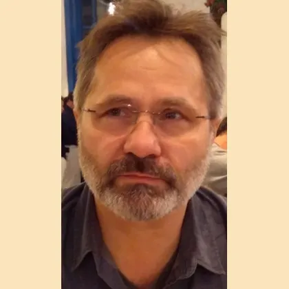
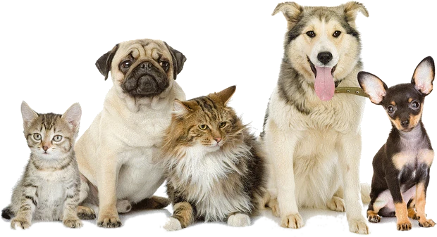
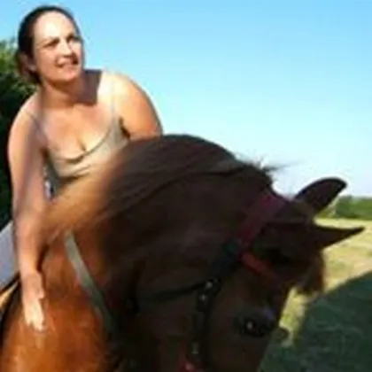
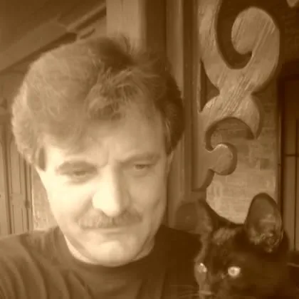
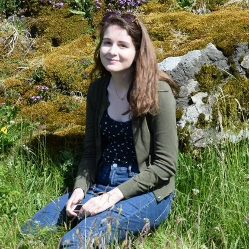
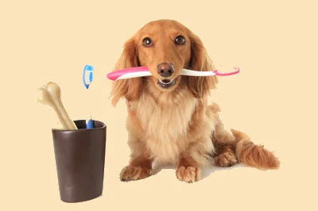
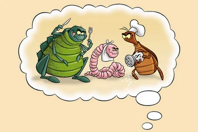

Dr. Mésző Zoltán
Praxisvezető állatorvos
1992-ben diplomázott, azóta megszakítás nélkül Pécsett dolgozik; a rendelőt 1994 óta vezeti.
A Szigeti úton, 1994 óta: belgyógyászat, sebészet, ultrahang és labor egy rendelőben. Kérjük, minden esetben foglaljon időpontot: online vagy telefonon.

Válassza ki, és megmutatjuk, hogyan kap a leggyorsabban időpontot.
8–11 · 14–17hétfőtől péntekig, időpontra; szombaton és vasárnap zárva
Hétfőtől péntekig rendelünkHétköznap 8:00 és 17:00 között. Időpont lemondása, módosítása is itt, vagy e-mailben: info@vitavet.hu.
Pécs városi rendelői ügyelet. Parkolni a rendelő udvarában tud.
„A kezdetekben vegyes praxist folytattam, de ma már kizárólag házi kedvencekkel foglalkozom.” – Dr. Mésző Zoltán, praxisvezető állatorvos
Emésztő-, légző-, szív- és keringési, ideg- és húgyúti betegségek, belső elválasztású mirigyek.
Lágyszöveti sebészet, traumás sebek ellátása, emlődaganat eltávolítása.
Nőstény és hím kutyák, macskák ivartalanítása, műtét előtti állapotfelméréssel.
Szülészeti segítség, császármetszés, vemhességi vizsgálat ultrahanggal.
Parazitás, allergiás és egyéb bőrbetegségek okának kimutatása és kezelése.
Fogászati alapellátás, ultrahangos fogkő-eltávolítás, foghúzás.
Védőoltások kutyának, macskának, nyúlnak, vadászgörénynek; parazitavédelem.
Chip beültetése, EU-s állatútlevél kiállítása, regisztráció ellenőrzése.
Macskáknál és kis- és középtermetű kutyáknál 6–8 éves kor felett évente javasoljuk, nagytestű kutyáknál már 5 éves kortól: részletes fizikális vizsgálat és vérvétel. Minél hamarabb derül ki egy betegség, annál könnyebb lassítani.
Pécs, Szigeti út 114. Az utcai bejárat mellett autóval az udvarba hajthat, ott parkolhat.

Praxisvezető állatorvos
1992-ben diplomázott, azóta megszakítás nélkül Pécsett dolgozik; a rendelőt 1994 óta vezeti.
Állatorvos
2018-ban diplomázott; Bécsben, Brünnben és Helsinkiben is tanult. Fő érdeklődése a belgyógyászat és a kardiológia.

Kisállatgyógyászati asszisztens
Környezetkutató; 2015 novembere óta dolgozik a rendelőben.

Asszisztens
1985-ben szerzett állategészségügyi végzettséget; azóta állatorvosi asszisztens.

Asszisztens
Okleveles pszichológus (PTE, 2018); „humán szemléletmóddal” segíti a kezeléseket.
426 Google-vélemény alapján
„…kiválóan értenek a nehezen kezelhető, félős cicákhoz és a rémült gazdikhoz egyaránt.”Google-vélemény, sürgős eset után
„Mindent meg tettek, erőn felül.”Google-vélemény, súlyosan beteg kutya gazdija

Minél kevesebb a fogkő, annál rövidebb a beavatkozás és az altatás. Az 5 évnél idősebb kutyák 80%-át érintheti ínygyulladás.

Kullancs nemcsak az erdőben van. Eltávolításkor a fejét fogja meg csipesszel, és az óramutatóval ellentétesen forgassa két-három fordulatot.
Védőoltást csak egészséges állat kaphat, és célszerű előtte féregteleníteni. Kutyát 12–16 hetes kora között kötelező veszettség ellen oltani és chippel megjelölni.
Rendelőnk protokollja szerint szukát és nőstény macskát 8–9 hónaposan, kant és kandúrt 7–8 hónaposan. A varratszedés a 8–10. napon van, addig gallér kell.
Fiatal, egészséges állatnál elég a kikérdezés és a fizikális vizsgálat. Ha bármi gyanús (sok ivás, fogyás, fáradékonyság), előtte vérvétel, röntgen vagy ultrahang jöhet.
Szívférgesség ellen a megelőző szert az utazás előtt 30 nappal kell kezdeni, és hazaérkezés után még 30 napig adni.
Igen, minden esetben foglaljanak időpontot: online a rendelő foglalóján, vagy telefonon a 72 332 130-as számon, hétköznap 8 és 17 óra között.
Védőoltásra, féregtelenítésre, betegvizsgálatra és konzultációra, hétköznap 8 és 16 óra közötti időpontra, legkésőbb az előző nap éjfélig. Vérvételre, vemhességi ultrahangra, szívultrahangra, EKG-ra, bódításban végzett beavatkozásra, műtétre és fogkő-eltávolításra csak személyesen vagy telefonon adunk időpontot.
Rendelési időn kívül a Pécs városi rendelői ügyeletet: +36 30 970 5419.
Személyesen, telefonon (72 332 130) vagy e-mailben (info@vitavet.hu).
Legkorábban 6 hónaposan; rendelőnk protokollja szerint a szukákat és nőstény macskákat 8–9 hónaposan (vagy az első tüzelés után), a kanokat és kandúrokat 7–8 hónaposan ivartalanítjuk.
Igen, a rendelő udvarában lehet parkolni (Pécs, Szigeti út 114.).
7624 Pécs, Szigeti út 114.
Útvonal a térképen
+36 72 332 130 · info@vitavet.hu
Rendelés: hétfőtől péntekig 8–11 és 14–17, időpontra